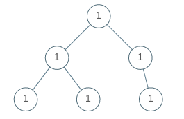

965. Univalued Binary Tree
A binary tree is univalued if every node in the tree has the same value.
Return true if and only if the given tree is univalued.
Example 1:
Input: [1,1,1,1,1,null,1] Output: true
Example 2:

Input: [2,2,2,5,2] Output: false
Note:
- The number of nodes in the given tree will be in the range
[1, 100]. - Each node's value will be an integer in the range
[0, 99].